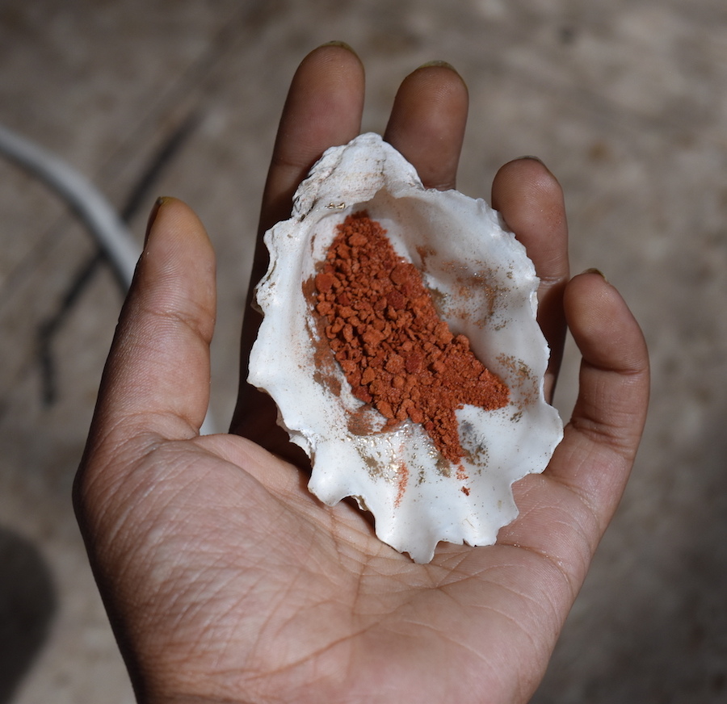

Aarati Akkapeddi
They/them
CV,
Blog,
Github,
Teaching
Location: Occupied Lenapehoking (NYC)
I am a first-generation Indian-American cross-disciplinary artist, educator, and programmer interested in the poetics and politics of datasets. I work with both personal and institutional archives to explore how identities and histories are shaped by different methods of collecting, preserving, and presenting data. I combine code, machine learning, and analog techniques (photography, printmaking, & embossing) to navigate these themes. In my work, I often use family photographs and archival images as a source material. I use algorithms designed for applications such as facial recognition with these photographs, creating performative rituals of information extraction, traversing themes of intergenerational memory, loss, and diaspora. My work has been supported by institutions such as NYC Media Lab, Beamcenter, ETOPIA Center for Art & Technology, & LES Printshop.